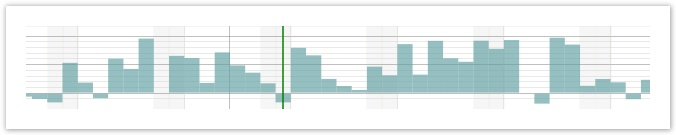
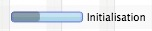
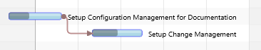
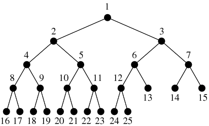
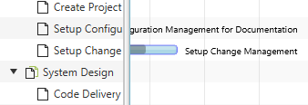
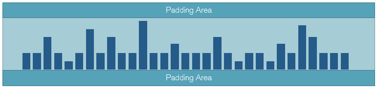
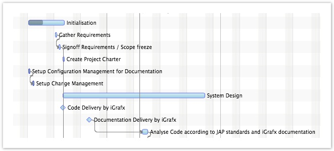
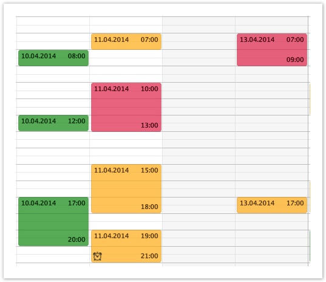
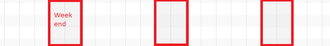

Overview
The following table lists the most important model classes for populating a Gantt chart with data.
| Class | Description |
|---|---|
| Activity | Activities represent objects that will be displayed below the timeline in the graphics view of the Gantt chart control. Activities can be added to a specific layer on a row. |
| ActivityRef | An activity reference is used to precisely identify the location of an activity where the location is a combination of the row, the layer, and the activity itself. |
| ActivityLink | An activity link can be used to express a dependency between two activities. |
| ActivityRepository | Activity repositories are used by rows to store and lookup activities. |
| Row | A (model) row object is used to store the activities found on a (visual) row of the Gantt chart. |
| Layer | Layers are used to create groups of activities. |
| LinesManager | A lines manager is used to control the layout of (inner) lines inside a row. |
| Layout | Each row and each inner line of a row are associated with a layout. The layout influences several aspects during rendering and editing of activities. Additionally several of the system layers used for drawing the row background also utilize the layout information. |
| Calendar | A calendar is an extension of an activity repository with the addition of a name and a visibility property. |
Activity
Activities represent objects that will be displayed below the timeline in the graphics view of the Gantt chart control.
Activities can be added to a specific layer on a row by calling Row.addActivity(Layer, Activity).
Activity Types
These are the different types of activities that can be added to a row.
-
Activity- base implementation:ActivityBaseBase- the simplest form of an activity.- id (String)
- name (String)
- startTime (Instant)
- endTime (Instant)
-
ChartActivity- base implementation:ChartActivityBaseBase- activities of this type can be displayed in a chart layout. - id (String)
- name (String)
- startTime (Instant)
- endTime (Instant)
-
chartValue (double)
-
CompletableActivity- base implementation:CompletableActivityBase- activities of this type carry a percentage value (completion). - id (String)
- name (String)
- startTime (Instant)
- endTime (Instant)
-
percentageComplete (double)
-
HighLowChartActivity- base implementation:HighLowChartActivityBase- activities of this type can be displayed in a chart layout. - id (String)
- name (String)
- startTime (Instant)
- endTime (Instant)
- high (double)
-
low (double)
-
MutableActivity- base implementation:MutableActivityBase- the simplest form of a mutable activity. The user can change the start and end time of these activities. - id (String)
- name (String)
- startTime (Instant)
-
endTime (Instant)
-
MutableChartActivity- base implementation:MutableChartActivityBase- these activities can be displayed in a chart layout. The user can change the start and end time and the chart value of these activities. - id (String)
- name (String)
- startTime (Instant)
- endTime (Instant)
-
chartValue (double)
-
MutableCompletableActivity- base implementation:MutableCompletableActivityBase- these activities carry a percentage value (completion). The user can change the start and end time and the percentage complete value of these activities. - id (String)
- name (String)
- startTime (Instant)
- endTime (Instant)
-
percentageComplete (double)
-
MutableHighLowChartActivity- base implementation:MutableHighLowChartActivityBase- these activities can be displayed in a chart layout. The user can change the start and end time and the high and low value of these activities. - id (String)
- name (String)
- startTime (Instant)
- endTime (Instant)
- high (double)
- low (double)
Chart Activity
A chart activity is an add-on interface for activities. It needs to be implemented by activities that want to participate in a ChartLayout. The interface adds a chart value to the activity. The image below shows an example of a chart layout laying out one chart activity per day.

Completable Activity
A completable activity is an activity that carries a "percentage complete" value between 0 and 100%. Completable activities are drawn with a "completable activity bar renderer." This renderer draws the background of the activity based on the percentage complete value. The image below shows an example.

High-Low Chart Activity
A high-low chart activity carries two extra attributes: high and low. These values are used by the ChartLayout to position them appropriately. One example of a good use case for high low activities is candlestick charts (e.g. stocks open / high / low / close price).
Activity Reference
An activity reference is used to precisely identify the "location" of an activity. A location is the combination of row, layer, and the activity itself. As the same activity can be located on multiple rows and or multiple layers at the same time, it is often necessary to work with an activity reference instead of only the activity. One can think of an activity reference as a "path" to the activity.
Activity Link
An activity link can be used to model any kind of dependency between two activities. In project planning applications a link would express a predecessor / successor relationship between two tasks. For example, "task A has to be finished before task B can begin". In other domains a link might simply express that two or more activities need to be scheduled together and that moving one of them requires all others to be moved, too. The image below shows an example of such a link.
A link can be added to the Gantt chart by calling GanttChart.getLinks().add(myLink);

Activity Repository
Activity repositories are used by rows to store and lookup activities. Each row by default owns an
IntervalTreeActivityRepository. This default repository can be replaced with a custom one, for example, if your
application requires a lazy loading strategy.
Queries
The most important functionality of any repository is the ability to query the repository for activities within a given
time interval. For this purpose the ActivityRepository interface defines the getActivities() method with these
parameters:
| Type | Name | Description |
|---|---|---|
| Layer | layer | Whenever the user scrolls left or right, the row will query the repository several times. Once for each layer. |
| Instant | startTime | The start time of the time interval for which the row is querying activities. |
| Instant | endTime | The end time of the time interval for which the row is querying activities. |
| TemporalUnit | unit | The current value of the primary temporal unit currently displayed by the dateline. This is the unit shown at the bottom of the dateline, e.g. days. This parameter can be used to control how fine-grained the result will be. If we know that the user is currently looking at months, then it might make sense to aggregate daily activities. |
| ZomeId | zoneId | The timezone shown by the row. |
Earliest / Latest Time Used
Each repository implementation needs to be able to answer the question for the earliest and latest times used
(earliest start time / latest end time of any activity stored in the repository). This allows the UI to provide controls
for easy navigation: "show earliest", "show latest". For this purpose repositories need to implement the
getEarliestTimeUsed() and getLatestTimeUsed() methods.
Updating Activities
Activities need to be removed (ActivityRef.detachFromRow()) from their repository before they are being changed and
added back (ActivityRef.attachToRow()) after they have been changed. This is the only way to ensure that a repository
will always have its underlying data structure in synch with the activities. Example: the interval tree data structure
only works properly if all its nodes are in their correct location. This can only be guaranteed if the nodes are removed
from the tree before they are being changed (otherwise the tree will not find them) and then reinserted with their new
value.
Event Handling
Activity repositories implement listener support so that the UI can update itself if the content of the repository
changes. Interested parties can attach handlers by calling addEventHandler() or remove handlers by calling
removeEventHandler(). The event class is called RepositoryEvent and it has three event types:
ACTIVITY_ADDED- An activity was added to the repository.ACTIVITY_REMOVED- An activity was removed from the repository.REPOSITORY_CHANGED- Something has changed the state of the repository.
Each one of these event types will normally trigger a redraw operation of the row to which the repository belongs.
IntervalTreeActivityRepository
The InteralTreeActivityRepository is an activity repository using one or more binary interval tree data
structures for storing activities.

ListActivityRepository
The ListActivityRepository is an activity repository using one or more list data structures to store activities. This
repository can be configured to return different types of result iterators from its query method. The possible values
are defined in ListActivityRepository.IteratorType.
BINARY_ITERATOR- returns an iterator that performs a binary search to find the first activity to draw for a given time interval. It will then iterate over all following activities until it finds an activity that starts after the given time interval.LINEAR_ITERATOR- returns an iterator that performs a linear search to find the first activity to draw for a given time interval. It will then iterate over all following activities until it finds an activity that starts after the given time interval.SIMPLE_ITERATOR- returns an iterator that does not perform any search at all but will start returning activities immediately, no matter whether they are currently located in the visible time interval of the Gantt chart or not.
The SIMPLE_ITERATOR is used for rows with only a few activities on them. This iterator is invaluable when we want to
make sure that the trailing text of an activity will still be shown even if the activity has already scrolled out of
the visible area.

Row
A row object is used to store the activities found on a row of the Gantt chart. These activities are not stored directly
on the row but in an activity repository. The default repository is of type IntervalTreeActivityRepository. Activities
can be placed on lines within the row. The row delegates this work to a LinesManager. The default manager is of type
EqualLinesManager.
Type Arguments & Hierarchy
Three type arguments are needed to define a row. The first one defines the type of the parent row, the second one defines the type of the children rows, the third one defines the type of the activities shown on the row. The following is an example that defines a "building." The building is part of a factory. The building has machines in it. In the row representing the building we are showing shifts.
public class Building extends Row<Factory, Machine, Shift> {
}
A model like this would allow us to display a hierarchy in the Gant chart that might look like this:
- Factory
- Building 1
- Building 2
- Building 3
- Machine A
- Machine B
- Machine B
- Building 4
- Machine C
- Machine D
Properties
Each row has a set of observable properties.
| Property | Type | Description |
|---|---|---|
| expanded | Boolean | Controls whether the row will show its children rows or not. |
| height | double | The current height of the row. |
| minHeight | double | The minimum height of the row. |
| maxHeight | double | The maximum height of the row. |
| layout | Layout | The layout used by the row. The default is GanttLayout. |
| lineCount | int | The number of inner lines to show within the row. |
| linesManager | Lines Manager | The lines manager used for controlling the lines, their location, their height, the placement of the activities. |
| name | String | The name of the row, e.g. "Machine 1", "Building 1". |
| parent | Row | The parent row. This is a read-only property that is managed internally and updated when a row gets added to the list of children of another row. |
| repository | Activity Repository | The repository used by the row to store the activities. |
| showing | boolean | A flag used to signal that the row is currently shown in the UI. This information can be used for optimizing lazy loading strategies. |
| userObject | Object | An optional user object. Used to have a bridge to the business model. |
| zoneId | ZoneId | The timezone represented by the row. Each row can be in its own timezone. |
Layer
Layers are used to group activities together. Activities on the same layer are drawn at the same time (z-order). A layer has a name, an ID, it can be turned on / off, and their opacity can be changed. These changes have an impact on all activities on that layer. The ID of the layer is used for drag and drop operations of activities between different Gantt charts. Dropped activities will be added to the layer with the same ID. The layer name will be used as the default ID for newly created layers. The ID only needs to be changed if the same layer type is used with different names in different Gantt charts.
Lines Manager
This manager is used to control the layout of lines inside a row. Activities located on different lines do not
overlap each other, except if the lines themselves overlap each other. Each line can have its own height and a location
within the row. Each line can also have its own layout. By using lines and layouts, it is possible to display activities
that belong to the same row in different ways (see ChartLayout, AgendaLayout, GanttLayout).
Line Count
The actual number of lines on a row is stored on the lineCount property of the row. Simply call Row.setLineCount(int) to
change its value. If the line count is larger than zero, the row will call back on its line manager to figure out where each
line is located, how high it is, and which activity will be placed on which row. Also, the type of layout to use for each
line will be retrieved from the manager.
Interface
The following table lists the interface methods of a LineManager.
| Method | Description |
|---|---|
| double getLineHeight(int lineIndex, double rowHeight); | Returns the height of the line with the given index. The height can be computed on-the-fly based on the given available row height. |
| int getLineIndex(A activity); | Returns the line index for the given activity. This method places activities on different lines. |
| Layout getLineLayout(int lineIndex); | Returns the layout for the line with the given line index. Each line can have its own layout. |
| double getLineLocation(int lineIndex, double rowHeight); | Returns the location of the line with the given index. The location can be computed on-the-fly based on the given available row height. |
Equal Lines Manager
The EqualLinesManager can be used to equally distribute line locations and line heights on a row. Each line will have
the same height, and the lines will not overlap each other. While the manager will provide this behavior, it is
still the responsibility of the application to place the activities on different rows and to specify the layout for
each line. This is also the reason why the methods getLineHeight() and getLineLocation() are final while the methods
getLineLayout() and getLineIndex() are not and can be overridden.
Auto Lines Manager
The AutoLinesManager can be used to create a dynamic number of lines based on all activities inside a repository. This
line manager detects clusters of intersecting activities (start / end time intervals) and ensures that enough lines are
available to place the activities in a non-overlapping way. Below you are finding the complete source code of this
manager class as a case study. Please note that the manager's layout() method needs to be invoked from the outside.
A good way to do this is to listen to ACTIVITY_CHANGE_FINISHED events or even more fine grained START/END_TIME_CHANGE_FINISHED
events.
/**
* Copyright (C) 2026 Dirk Lemmermann Software & Consulting (dlsc.com)
*
* This file is part of FlexGanttFX.
*/
package com.flexganttfx.view.util;
import static java.util.Objects.requireNonNull;
import impl.com.flexganttfx.skin.util.Placement;
import impl.com.flexganttfx.skin.util.Resolver;
import java.time.Instant;
import java.util.ArrayList;
import java.util.Iterator;
import java.util.List;
import java.util.Map;
import com.flexganttfx.model.Activity;
import com.flexganttfx.model.ActivityRepository;
import com.flexganttfx.model.Layer;
import com.flexganttfx.model.LinesManager;
import com.flexganttfx.model.Row;
import com.flexganttfx.model.layout.EqualLinesManager;
import com.flexganttfx.view.graphics.GraphicsBase;
/**
* A specialized {@link LinesManager} used for ensuring that activities will not
* overlap each other. This manager will create as many inner lines as needed
* and will calculate the placement of all activities on these lines.
*
* @param <R>
* the type of the row that will be managed
* @param <A>
* the type of the activities that will be managed
*
* @since 1.2
*/
public class AutoLinesManager<R extends Row<?, ?, A>, A extends Activity>
extends EqualLinesManager<R, A> {
private Map<A, Placement<A>> placements;
private GraphicsBase<R> graphics;
/**
* Constructs a new automatic lines manager. The constructor requires a
* reference to the graphics view to look up various parameters that are
* needed when the manager queries the activity repository of the row (e.g.
* the currently displayed temporal unit and the list of layers).
*
* @param row
* the managed row
* @param graphics
* the graphics view where the manager will be used
*
* @since 1.2
*/
public AutoLinesManager(R row, GraphicsBase<R> graphics) {
super(row);
this.graphics = requireNonNull(graphics);
layout();
}
/**
* Returns the graphics view where the manager will be used.
*
* @return the graphics view
* @since 1.2
*/
public final GraphicsBase<R> getGraphics() {
return graphics;
}
public final void layout() {
R row = getRow();
ActivityRepository<A> repository = row.getRepository();
Instant st = repository.getEarliestTimeUsed();
Instant et = repository.getLatestTimeUsed();
if (st == null || et == null) {
return;
}
List<A> allActivities = new ArrayList<>();
for (Layer layer : graphics.getLayers()) {
Iterator<A> activities = repository.getActivities(layer, st, et,
graphics.getTimeline().getDateline()
.getPrimaryTemporalUnit(), row.getZoneId());
if (activities != null) {
activities.forEachRemaining(activity -> allActivities
.add(activity));
}
}
placements = Resolver.resolve(allActivities);
if (placements != null && !placements.isEmpty()) {
Placement<A> p = placements.values().iterator().next();
row.setLineCount(p.getColumnCount());
} else {
row.setLineCount(0);
}
}
@Override
public int getLineIndex(A activity) {
if (placements != null) {
Placement<A> placement = placements.get(activity);
if (placement != null) {
return placement.getColumnIndex();
}
}
return -1;
}
}
Layout Types
Each row and each inner line of a row are associated with a layout. The layout influences several aspects during
rendering and editing of activities. Additionally, several of the system layers used to draw the row background also
utilize the layout information. The layout can be set by calling Row.setLayout(Layout) or when using inner lines by
returning them via the lines manager of the row.
Three layout types are included in FlexGanttFX.
| Layout | Description |
|---|---|
| GanttLayout | Lays out activities horizontally along the timeline. Positions are based on the start and end times of the activities. |
| AgendaLayout | Lays out activities vertically along a "local time" scale (0 - 24 hours). This makes activities look like calendar entries. |
| ChartLayout | Lays out activities as chart values. Activities can implement the ChartActivity or the HighLowChartActivity interface. |
Padding
All layout types have a padding property. It is used to create a visual gap at the top and bottom of each row / line.

Gantt Layout

Agenda Layout
The agenda layout class is used to lay out activities in a style similar to a regular calendar where a vertical scale will display hours. Activities are used to represent appointments for a given day. Activities shown in an agenda layout might be rendered several times. This is, for example, the case when an activity spans several days.

The agenda layout class allows you to specify a start and end time. This is used to restrict the time interval that is
shown and in which the agenda activities are laid out. In most cases it does not make sense to show the entire 24 hours
but only the working hours, e.g. 8am until 6pm. Simply call AgendaLayout.setStartTime() or setEndTime() to change the
time range.
Conflict Strategy
Activities in an agenda layout might intersect with each other. The conflictStrategy property allows you how to handle
these situations. The following list shows the possible values.
| Strategy | Description |
|---|---|
| OVERLAPPING | Conflicting agenda entries will be drawn on top of each other but with one of them being indented by a couple of pixels. The indentation amount can be controlled via the overlapOffset property on AgendaLayout. |
| PARALLEL | Conflicting agenda entries will be displayed in different columns within the same day. |
Chart Layout
Using the ChartLayout class results in activities being laid out as chart bars. A series of such bars can, for example,
be used to form a capacity profile. Activities of type ChartActivity will be placed on a zero line between the minimum
and the maximum value of the layout. The height of the chart activity will be based on the value returned by
ChartActivity.getChartValue(). Activities of type HighLowChartActivity will appear as floating bars. The layout also
supports the definition of minor and major chart lines drawn in the row background.
Min & Max Value – the chart layout provides two properties that control the actual layout of the chart activities:
minValue and maxValue. These values have to be managed by the application, not the framework. They can be set by calling
ChartLayout.setMinValue() or ChartLayout.setMaxValue().
Major & Minor Ticks – a list of major and minor ticks is available on each chart layout instance. Values can be added to these lists to render value lines in the background of the row. Example: the min value is equal to 0 the max value is equal to 100. Then it would make sense to define major ticks for the values 50 and 100. Minor ticks might be at 10, 20, 30, 40, 60, 70, 80, and 90.
Calendar
A calendar is an extension of an activity repository with the addition of a name and a visibility property. Calendars
can be added to the whole Gantt chart or to individual rows within the Gantt chart. Also, the Dateline makes use of them.
Dateline.getCalendars();
GraphicsBase.getCalendars();
Row.getCalendars();
Calendars are used for the background of rows. They can mark things like weekend days or holidays. Calendar information
is always shown as read-only. Activities returned by calendars have to be of the type CalendarActivity. They cannot be
edited interactively by the user.
Weekend Calendar
There already is a predefined calendar type included in FlexGanttFX. It is called WeekendCalendar and it is used to
mark the weekend days (e.g., Saturday, Sunday).

The following listing shows the entire code of this calendar class. It can be used as a basis for your own calendars.
/**
* Copyright (C) 2014 Dirk Lemmermann Software & Consulting (dlsc.com)
* This file is part of FlexGanttFX.
*/
package com.flexganttfx.model.calendar;
import static java.time.temporal.ChronoUnit.DAYS;
import static java.util.Objects.requireNonNull;
import java.time.DayOfWeek;
import java.time.Instant;
import java.time.ZoneId;
import java.time.ZonedDateTime;
import java.time.temporal.ChronoUnit;
import java.time.temporal.TemporalUnit;
import java.util.ArrayList;
import java.util.Arrays;
import java.util.Collections;
import java.util.EnumSet;
import java.util.Iterator;
import java.util.List;
import javafx.event.Event;
import com.flexganttfx.model.Layer;
import com.flexganttfx.model.repository.RepositoryEvent;
/**
* A calendar specialized on returning activities that represent weekend days
* (default: Saturday, Sunday). The days that are considered weekend days can be
* configured by calling {@link #setWeekendDays(DayOfWeek...)}.
*
* @since 1.0
*/
public class WeekendCalendar extends CalendarBase<WeekendCalendarActivity> {
private Instant lastStartTime = Instant.MIN;
private Instant lastEndTime = Instant.MAX;
private ZoneId lastZoneId;
private List<WeekendCalendarActivity> entries;
private EnumSet<DayOfWeek> weekendDays = EnumSet.of(DayOfWeek.SATURDAY,
DayOfWeek.SUNDAY);
/**
* Constructs a new weekend calendar.
*
* @since 1.0
*/
public WeekendCalendar() {
super("Weekends");
}
/**
* Sets the days of the week that are considered to be a weekend day. By
* default {@link DayOfWeek#SATURDAY} and {@link DayOfWeek#SUNDAY} are
* considered weekend days.
*
* @param days
* the days of the week that are to be considered weekend days
* @since 1.0
*/
public void setWeekendDays(DayOfWeek... days) {
requireNonNull(days);
weekendDays.clear();
weekendDays.addAll(Arrays.asList(days));
Event.fireEvent(this, new RepositoryEvent(this));
}
/**
* Returns the days of the week that are to be considered weekend days. By
* default {@link DayOfWeek#SATURDAY} and {@link DayOfWeek#SUNDAY} are
* considered weekend days.
*
* @return the days of the week used as weekend days
* @since 1.0
*/
public DayOfWeek[] getWeekendDays() {
return weekendDays.toArray(new DayOfWeek[weekendDays.size()]);
}
@Override
public Iterator<WeekendCalendarActivity> getActivities(Layer layer,
Instant startTime, Instant endTime, TemporalUnit temporalUnit,
ZoneId zoneId) {
if (!(temporalUnit instanceof ChronoUnit)) {
/*
* We only work for ChronoUnit.
*/
return Collections.emptyListIterator();
}
if (startTime.equals(lastStartTime) && endTime.equals(lastEndTime)
&& zoneId.equals(lastZoneId)) {
/*
* We already answered this query for the given time interval. Let's
* return the result from last time.
*/
if (entries != null) {
return entries.iterator();
}
} else {
ChronoUnit unit = (ChronoUnit) temporalUnit;
/*
* The time interval has changed. Find the weekends within the new
* interval, but only if the user is currently looking at days or
* weeks.
*/
if (isSupportedUnit(unit)) {
/* Lazily create list structure. */
if (entries == null) {
entries = new ArrayList<WeekendCalendarActivity>();
} else {
entries.clear();
}
ZonedDateTime st = ZonedDateTime.ofInstant(startTime, zoneId);
ZonedDateTime et = ZonedDateTime.ofInstant(endTime, zoneId);
findWeekends(st, et);
lastStartTime = startTime;
lastEndTime = endTime;
lastZoneId = zoneId;
return entries.iterator();
}
}
return Collections.emptyListIterator();
}
/**
* Determines if weekends will be shown for the given temporal unit.
* By default, we only show weekends for {@link ChronoUnit#DAYS} and
* {@link ChronoUnit#WEEKS}. To support more units, override
* this method in a subclass.
*
* @param unit
* the unit to check
* @return true if weekend information will be shown in the Gantt chart
* @since 1.0
*/
protected boolean isSupportedUnit(TemporalUnit unit) {
if (unit instanceof ChronoUnit) {
ChronoUnit chronoUnit = (ChronoUnit) unit;
switch (chronoUnit) {
case DAYS:
case WEEKS:
return true;
default:
return false;
}
}
return false;
}
private void findWeekends(ZonedDateTime st, ZonedDateTime et) {
while (st.isBefore(et) || st.equals(et)) {
if (weekendDays.contains(st.getDayOfWeek())) {
st = st.truncatedTo(DAYS);
entries.add(new WeekendCalendarActivity(st.getDayOfWeek()
.toString(), Instant.from(st), Instant.from(st
.plusDays(1)), st.getDayOfWeek()));
}
st = st.plusDays(1);
}
}
}